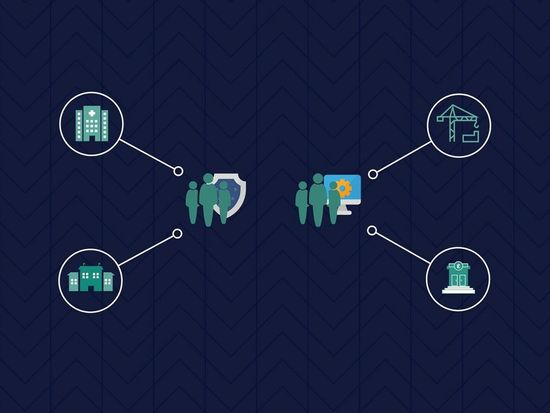
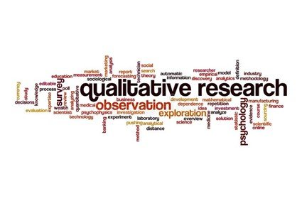

This module, we will cover the concepts and principles in the field of Cyber Security, the governance and ethical frameworks and competencies required as a Cyber Security professional. It also enables you to engage, experience and envision the current as well as the future development of the discipline.
This module will introduce you to the underpinning concepts and principles of Secure Systems Architecture (SSA). This includes a review of the evolution of traditional operating systems architecture models, common security models, and the impact of distributed systems technologies on modern systems. The course will provide you with a combination of an understanding of operating systems, distributed services and the security aspects of both. The module enables you to engage in debate to identify contemporary cyber security-based challenges and the ability to design appropriate solutions.
This module covers the impact of cyber security on network systems and designs, focusing especially on network vulnerability assessments. Discussion around techniques that can be used to scan, evaluate and in some case mitigate network vulnerabilities. It also considers the area of vulnerability assessments and explain the various mechanisms and approaches encapsulated in the Vulnerability Assessment Continuum.
The module aims to provide:Understanding of the fundamentals of vulnerability assessment in various systems - Understanding of the fundamentals of the provision of security in information networks - Awareness of the various protocols and architectures used by various network systems - Understanding of the use and benefits of various monitoring and logging tools - Understanding of how to create and use security vulnerability and assessment tools - Ability to present critical arguments for specific actions or outcomes to a diverse audience - The opportunity to reflect on and evaluate their personal development
Security and risk are increasingly being treated as inseparable as enterprises move away from traditional siloed views of business towards more integrated, enterprise solutions. This module covers the various areas where security and risk overlap and interact with each other. Discussion about the various methods of risk assessment looking at both qualitative and quantitative methods. Discuss a number of more traditional risk models (such as STRIDE, DREAD and Attack Trees) as well as reviewing the increasing trend towards hybrid models. Review common security standards such as PCI-DSS and look at business continuity and disaster recovery solutions. In addition, discuss some of the key research topics and advances driving the fields of security and risk management.
Learning Outcomes: Discuss the difference between qualitative and quantitative risk assessments - Describe how to carry out both kinds of assessments - Explain what is meant by and how to create threat models - Demonstrate how to create quantitative risk models - Discuss and design DR solutions.
This module takes a depth look at the security risks which are associated with programming languages, from the perspectives of design and architecture approaches, programming paradigms, testing, the impact and implications of operating systems and libraries on software development, the security risks associated with distributed systems and APIs, and future trends in secure software and systems design. Also covers the concept of the secure software development life cycle.
Learning Outcomes: Acquire a critical understanding of the concept of abstraction in programming - Develop an understanding of the basic principles of secure development methodologies - Explore how to undertake analysis, program design, software construction and testing required for software development - Demonstrate an understanding of the basic principles of architecture, as well as traditional and contemporary Software Development Life Cycle (SDLC) models, such as TOGAF and Agile - Ability to put into practice the techniques learned in a team environment, demonstrating how to deal with conflicts and how to make compromises, and be able to critically evaluate the effectiveness of the approaches - Utilise the opportunity to reflect on and evaluate your own personal development.
This module is designed to equip students with the knowledge and skills required to be able to design usable security solitons. The module draws on theories, concepts, and principles from behavioural psychological, privacy by design and design by default and computer science to explore how effective usable security solutions can be designed.
Learning Outcomes: Develop an understanding of the security issues and risks associated with how people interact with computing systems - Develop the knowledge and skills required to manage and mitigate cyber risks in socio-technical systems

This module covers the concepts and principles of Secure Systems Architecture (SSA). This includes a review of the evolution of traditional operating systems architecture models, common security models, and the impact of distributed systems technologies on modern systems. The course provides both combination of an understanding of operating systems, distributed services and the security aspects
Learning Outcomes: Ability to contextualise the basic architecture of modern operating systems - Understanding of the relationship between distributed systems and operating systems - Understanding of the role of virtualisation in Secure Systems Architecture (SSA) - An appreciation of current and future challenges, limitations and opportunities - The opportunity to reflect on and evaluate personal development.

This fascinating module gives an awareness of common legal principles which apply to cyberspace. That way, it provides a solid foundation in ethics, rights and regulatory challenges, which can allow you apply to a range of situations, jurisdictions and common legal principles relating to forensics and expert evidence.
Learning Outcomes: Critically appraise the global legal and regulatory environment as it applies to cyberspace, and compliance requirements, including the GDPR and the obligations it imposes. Critically appraise ethical considerations and the rights that people may or may not have in cyberspace, and understand the debates in this area. Explore the challenges and opportunities of regulating and policing cyberspace. Critically evaluate different types of evidence and collection and presentation techniques, underpinned by the principles of continuity of evidence and reliability of analytical tools and techniques.

This module provides you critical appraisal of the professional, legal, social, cultural and ethical issues that affect computing professionals. In this module, you can gain a practical foundation in research methods that will enable you to conduct research in practical settings.
Learning Outcomes: Appraise the professional, legal, social, cultural and ethical issues that affect computing professionals - Appraise the principles of academic investigation, applying them to a research topic in the applicable computing field - Evaluate critically existing literature, research design and methodology for the chosen topic, including data analysis processes - Produce and evaluate critically a research proposal for the chosen topic..